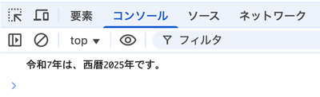

ダイアログボックスを使った記述
３種類のダイアログボックス
| 項目 | コード |
|---|---|
| 警告 | alert() |
| 確認 | confirm() |
| 入力 | prompt() |
メッセージを表示するダイアログボックス
alert( メッセージ );
ユーザーに確認を求めるダイアログボックス
confirm( メッセージ );
変数 = confirm( メッセージ );
- confirmメソッドは「戻り値を返す」
- ブーリアン型「true（真）」または「false（偽）」
ユーザーにデータを入力してもらうダイアログボックス
- promptから取得できた値は「文字列」です
prompt( メッセージ );
変数 = prompt( メッセージ, デフォルトの値 );
警告ダイアログに出力（表示）
- 警告ダイアログに「ありがとう！」と表示させる
<!DOCTYPE html> <html lang="ja"> <head> <meta charset="UTF-8"> <title>ありがとう！</title> </head> <body> <script> window.alert( 'ありがとう！' ); </script> <noscript> JavaScript対応ブラウザで表示してください。 </noscript> </body> </html>
警告ダイアログ表示
- JavaScriptで警告ダイアログを表示するには、「window.alert( )」を使います
window.alert( );
- ［OK］ボタンのある警告ダイアログウィンドウに( )の中の文字列を表示します
- 「window.」は省略できます。
コンソール（console）に出力（表示）
console.log( );
- 「検証」→「コンソール」に表示
文字列を出力（表示）
- テンプレートリテラル
- 「バッククォート」で囲む
- 変数は「${変数名}」で文字列内に挿入する
文字列と変数の連結（テンプレートリテラル）
- 「バッククォーテーション」で囲む
- 変数は「${変数}」と記述する
- consolに出力（表示）
<!DOCTYPE html> <html lang="ja"> <head> <meta charset="UTF-8"> <meta name="viewport" content="width=device-width, initial-scale=1.0"> <title>平成を西暦に変換する</title> </head> <body> <script> const reiwa = 7; let fullYear = 0; let message = ''; fullYear = reiwa + 2018; message = `令和${reiwa}年は、西暦${fullYear}年です。`; console.log( message ); </script> </body> </html>

ブラウザーで出力（表示）
- document.write( );
- ブラウザーの表示を上書き
- 2025年時点では「非推奨」
parseInt( );
- 文字列を数値に変換
- promptから取得できた「文字列」の値を数値として認識させる関数
- 整数型 【 integer 】 インテジャー
Math.round( );
- 数値を「四捨五入」する
<!DOCTYPE html> <html lang="ja"> <head> <meta charset="UTF-8"> <meta name="viewport" content="width=device-width, initial-scale=1.0"> <title>消費税合算後の支払金額を求める</title> </head> <body> <script> // 消費税権さんの初期値 let price = prompt('購入単価を入力してください。'); price = parseInt(price); let piece = prompt('購入個数を入力してください。'); piece = parseInt(piece); const taxRate = 0.1; let total = 0; let message = ''; // 演算（処理） total = (price * piece) + (price * piece * taxRate); total = Math.round(total); message = `単価${price}円の商品を${piece}個購入したとき、消費税合算後の支払金額は${total}円です。`; // 出力（コンソールに表示） console.log(message); // ブラウザに表示 document.write(message); </script> </body> </html>
confirm() で確認
- 「男性」か「女性」かを確認する
<!DOCTYPE html> <html lang="ja"> <head> <meta charset="UTF-8"> <meta name="viewport" content="width=device-width, initial-scale=1.0"> <title>BMIの値を求める</title> </head> <body> <script> // ユーザーからの入力を受け取る let weight = prompt('体重を kg 単位で入力してください：'); let height = prompt('身長を cm 単位で入力してください：'); // 性別を確認（OK なら 男性、Cancel なら 女性） let isMale = confirm('性別が男性であれば「OK」、女性であれば「キャンセル」をクリックしてください。'); let gender = isMale ? '男性' : '女性'; // 文字列を数値に変換 weight = parseFloat(weight); height = parseFloat(height) / 100; // cm → m // 入力チェック if (isNaN(weight) || isNaN(height) || weight <= 0 || height <= 0) { console.log('正しい数値を入力してください。'); } else { // BMI 計算 let bmi = weight / (height * height); // コンソールに結果を表示 console.log(`=== 結果 ===`); console.log(`性別：${gender}`); console.log(`体重：${weight} kg`); console.log(`身長：${(height * 100).toFixed(1)} cm`); console.log(`BMI：${bmi.toFixed(2)}`); // BMIの判定 if (bmi < 18.5) { console.log(`判定：低体重（やせ型）`); } else if (bmi < 25) { console.log(`判定：普通体重`); } else if (bmi < 30) { console.log(`判定：肥満（1度）`); } else { console.log(`判定：高度肥満`); } } </script> </body> </html>